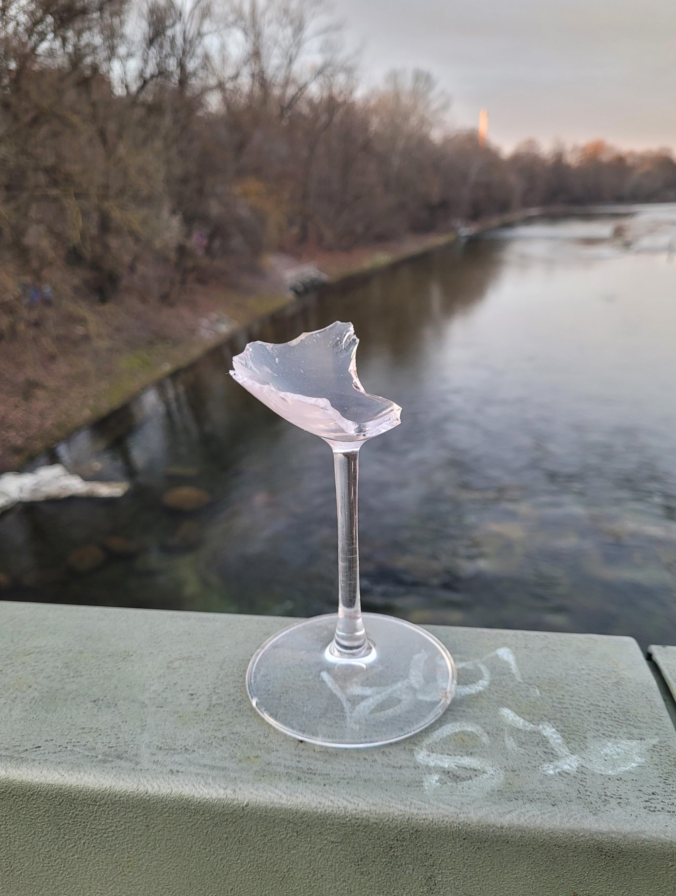

About
I am a PhD student at the University of Copenhagen under the supervision of Robert Burklund and Jesper Grodal.
Research
My research interests lie in higher algebra and its applications to algebraic geometry, K-theory and motivic homotopy theory.- Preprint: Desingularization and local formality of rational E-∞-rings.(Draft)
Eventhough I was mostly interested in rational applications, as a fun side-result I realized that A1-invariant K-theory
KH: CAlg(Sp) -> Sp as a functor from (non-connective) E-∞-algebras over the sphere to spectra factors through a 1-category.
I plan on putting the paper on the arxiv within the next two weeks, after adding some applications to Balmer spectra,
Picard groups and absolute Galois groups. - M.Sc. Thesis: Cohomology of ∞-topoi with values in derived ∞-categories. (Superv. Markus Land, formerly at the LMU Munich.)
Available upon request.
This was a good excuse to familiarize myself with the theory of ∞-topoi, sites and sheaves on topological spaces. I also proved a comparison result about singular- and sheaf cohomology of topological spaces, which was more general than anything available in the literature at the time. An (in my opinion much nicer) account of this result has since also appeared in section 3.3. of a paper by Land-Volpe. - B.Sc. Thesis: A syntactical approach to symmetric forcing. (Superv. Franz Merkl, LMU Munich)
Available upon request.
I give a purely syntactical construction of Cohen's symmetric forcing model, which is used to prove the independence of the axiom of choice from ZF. The account is almost entirely self-contained and includes an explicit example of a vector space without a basis, as well as an infinite set with no countably infinite subset.
Miscellaneous
- I made a poster about motives of non-connective rational E-infty-rings for the CATS8 conference in honour of Gabrielle Vezzosi's 60th birthday.
- Here's a note motivated by a question of Fadi Mezher, I thought a little bit about pro-spaces. It didn't really lead anywhere except to the observation that the composition monoidal structure on pro-spaces is much better behaved than the cartesian one.
- These are the slides for a gong talk I gave at Ulrich Bunke's 60th birthday conference, presenting a result from my Master thesis.
Curriculum Vitae
Here is my CV.Contact
Email: ph "dot" lastname "at" proton "dot" me
Adress: Department of Mathematics at the University of Copenhagen,
Universitetsparken 5, 2100 København Ø
Office 04.4.3.